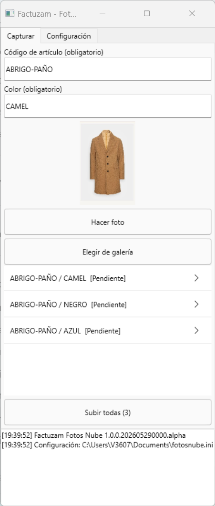
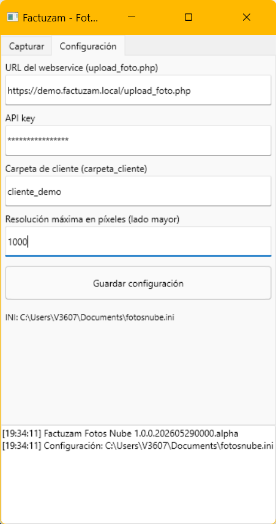

13 · Aplicaciones móviles
Factuzam dispone de aplicaciones móviles independientes para consultar información o capturar datos fuera del puesto Windows. Cada app usa una credencial y permisos propios; no se conecta directamente a MariaDB.
Factuzam Fotos Nube: fotografiar artículos desde Android
Factuzam Fotos Nube permite hacer fotos con la cámara del móvil —o elegirlas de la galería—, asociarlas a un artículo y color y subirlas por lotes al servicio de fotos. Después pueden descargarse e integrarse en el catálogo desde Factuzam.

Configuración inicial
En la pestaña Configuración indica:
| Campo | Contenido |
|---|---|
| URL | Dirección del servicio upload_foto.php facilitada por el administrador. |
| API key | Credencial de acceso al servicio de fotos. |
| Carpeta de cliente | Identificador de la instalación en el servidor. Debe existir previamente; no se crea desde el móvil para evitar duplicados por errores de escritura. |
| Resolución máxima | Tamaño máximo del lado mayor. El valor predeterminado es 1000 px y el límite de seguridad es 4000 px. |
Pulsa Guardar configuración. Los valores quedan en el almacenamiento privado de la aplicación; la pantalla muestra la ruta de su fichero de configuración.

La API key es una credencial. No la incluyas legible en capturas, correos ni incidencias: enmascárala antes de compartir la pantalla.
Capturar y subir un lote
- Escribe el código exacto del artículo.
- Escribe el color. Debe coincidir con el texto de color que forma el SKU en Factuzam, no con el color básico usado solo para clasificar.
- Pulsa Hacer foto o Elegir de galería. La imagen se reduce a la resolución configurada y se añade a la cola como Pendiente.
- Repite el proceso para todos los artículos y colores del lote.
- Pulsa Subir todas. Cada elemento pasa por Subiendo... y termina en Subida OK o Error. El registro inferior muestra el resultado.
Si hay varias imágenes del mismo artículo/color, la app les asigna los
índices 1, 2, 3... en el orden de la cola. Por ejemplo, la primera foto de
BLUSA01 en 011-AZ se publica como la imagen 1 de ese grupo.
Para que el emparejamiento sea fiable, Factuzam sanea el color con la misma
regla que el SKU: mayúsculas, espacios convertidos en guiones y sin símbolos
como /, % o €. Si el proveedor llama al color 011-AZ y su color
básico es AZUL, en la app se escribe 011-AZ.
Incorporar las fotos al catálogo de Factuzam
La subida al servidor no sustituye automáticamente la foto local. En el puesto Windows:
- Configura el servicio y la carpeta compartida de fotos en Otros ▸ Parámetros del entorno ▸ Fotos/Servicios web.
- Abre el artículo o la línea de una sesión de compra.
- Usa Bajar fotos del servidor. Factuzam descarga las imágenes, relaciona el color con el SKU y crea sus copias de 300 px, 600 px y resolución real en
appDirFotos. - Comprueba el resultado con
[Ctrl]+[F]o en la Consulta de stocks.
VentasFzam: ventas del día en el móvil
VentasFzam es una aplicación de consulta en modo solo lectura. Permite seguir las ventas diarias desde el teléfono sin abrir el TPV y sin riesgo de modificar facturas, cobros o stock.
Qué muestra
Cada línea de venta incluye:
- Hora, SKU y descripción.
- Temporada y proveedor.
- Importe vendido.
- Foto del artículo en resolución de 300 px, cuando está disponible.
Al tocar una línea se abre su detalle con familia, color, precio de coste, PVP, descuento en porcentaje y euros, precio de venta y total.
La cabecera resume cuatro indicadores del día:
| Indicador | Contenido |
|---|---|
| Venta | Total vendido con IVA, para que cuadre con la caja. |
| Coste | Coste acumulado de los artículos mostrados. |
| Margen | Importe y porcentaje calculados sobre la base imponible, no sobre la venta con IVA. |
| Descuento | Descuento total aplicado. |
Manejo diario
- ◀ / ▶ cambia al día anterior o siguiente.
- Tocar la fecha vuelve directamente a hoy.
- El buscador filtra en el teléfono sobre los datos descargados; el resultado aparece de inmediato y los cuatro totales se recalculan. La cabecera indica (filtrado) mientras haya una búsqueda activa.
- Las ventas anuladas o sustituidas no aparecen ni suman. La rectificativa sustitutiva correcta sí aparece; las rectificaciones por diferencias computan con su signo.
Las fotografías se descargan después de mostrar la lista para no retrasar la consulta y quedan almacenadas en la caché del teléfono. Si se cambia de día mientras se descargan, la app descarta las imágenes pendientes de la consulta anterior.
El día se determina por la fecha de la factura, no por el instante en que el servidor recibió el evento. Así los totales respetan el cierre del negocio y el huso horario de la instalación.
Puesta en marcha (administrador)
La consulta móvil necesita que la instalación publique las ventas en el servicio web:
- En Otros ▸ Parámetros del entorno ▸ Servicios web, configurar
appApiUrl(URL general),appApiToken(API key/token) yappApiReferencia(referencia de la instalación). - En TPV ▸ Parámetros de Caja ▸ Servicios web, activar Enviar ventas completas al webservice de respaldo (
vgerEnviarVentasWS) en los perfiles o cajas que correspondan. El valor inicial esFalse. - Crear una credencial móvil con permiso de lectura de ventas.
- En VentasFzam ▸ Configuración (⚙), indicar URL base, token y referencia.
Factuzam guarda cada cambio de una venta como un evento en una cola local y lo envía en segundo plano. La caja no espera a la red y la cola fiscal de Verifactu funciona de forma independiente. Los eventos se reintentan con el mismo identificador para evitar duplicados.
Supervisar los envíos
Abre Otros ▸ Colas de envíos ▸ Web Service Fzam para revisar el estado,
los intentos y el historial HTTP de cada evento. Actualizar refresca la
consulta y Ir a Documento abre la venta relacionada; la pantalla no
permite modificar ni reintentar filas. Los envíos pendientes se procesan cada
60 segundos de forma predeterminada y usan espera exponencial antes de pasar
a ERROR al agotar los 20 intentos configurados.
Consulta estados, permisos y recuperación en Otros ▸ Colas de envíos ▸ Web Service Fzam.
Las ventas históricas sincronizadas antes de incorporar un dato nuevo —por ejemplo, la temporada— pueden mostrarlo vacío hasta que vuelvan a enviarse. Las ventas nuevas lo incluyen desde el primer envío.
Recuento móvil de inventarios
La app de recuento permite escanear existencias desde terminales Android y devolver las cantidades a un inventario abierto. El envío y la recogida se controlan desde Factuzam; el móvil no regulariza el stock por sí solo.
Consulta el procedimiento completo en Almacén ▸ Inventarios ▸ Recuento móvil.
◀ Cambios y novedades · Índice · Siguiente ▶ Arquitectura y desarrollo